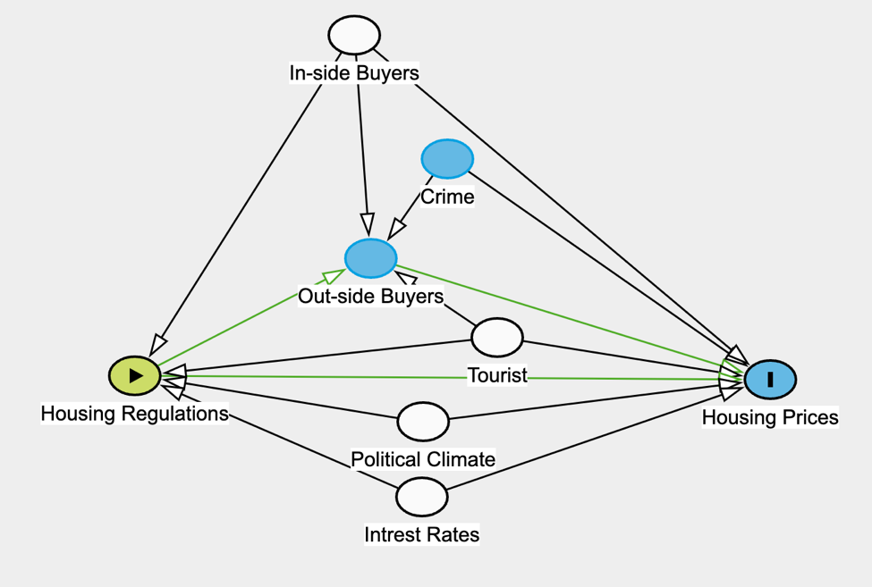
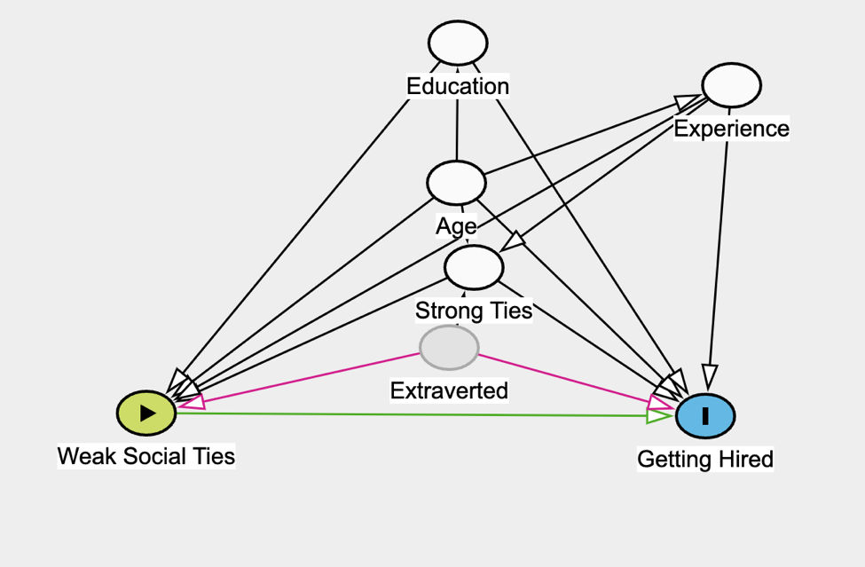

Causal Model
1: DAG I

The housing market in Hawaii is in a crunch. The state is suffering from a housing shortage that is skyrocketing prices. Many believe the price movement is caused by wealthy out-of-state buyers purchasing property in Hawaii. This is an exciting narrative, but the author claims this is unlikely. From 2010 to 2020, the number of outside buyers has decreased, likely crowded out buy the increase in inside buyers. Housing prices are weakly correlated with the percent change in outside buyers and slightly negatively correlated when examining state-level data. There is a multitude of existing research to back this claim; this pattern is seen in beachy tourist areas to cold climate North American suburbs. However, this does not mean the outside buyers do not have a causal relationship. In fact, housing regulations could be mediated through outside buyers.
The article makes two claims, housing prices are unaffected by outiside buyers, and are affected by housing regulations. To analyze the first claim, the housing regulation variable must be isolated. Interest rates, political climate, tourism rates, and inside buyers are back doors and must be controlled. Hawaii’s political leaders are imposing regulations to slow down outside buyers, so the number of outside buyers is a front door, and does not need to be controlled.
2: DAG II

More than 50 years ago, Mark Granovetter theorized that a person’s weak social ties are more likely to land a job than strong social ties. In Granovetter’s studies, he was only able to prove correlation, however, with current Linked-In data, a new study showed that weak and social relations have a positive effect on getting hires. The article does not explicitly say what variables were controlled for because they conducted an RCT. However, likely influences are education, age, experience, strong social ties, and extroversion. Education and experience have similar back door biases. As education and experience increase, a person becomes more qualified and has more social interactions. Age behaves similarly; as age increases, a person is generally more capable and has more time to create weak social ties. As the number of strong ties increases, the number of weak ties increases as well, and as past data has shown, strong ties also increase the likely hood of getting a job. Extroversion boosts both weak ties and strong ties, but cannot be observed.
If this study was created without RCT, the model’s backdoor must be controlled for. Education, age, strong ties, and experience are included in the model. Extroversion is left in the error term because an accurate proxy is unavailable.
3: DAG for your program

The Affordable Care Act (ACA) is a federal and state-funded program designed to help American health by increasing healthcare access and decreasing healthcare insurance. States must voluntarily enroll in the ACA, so measured effects are subject to selection bias. On bias could be the current political climate. If republicans represent a state, then the state’s policy is governed by conservative ideology. As a result, the state is less likely to adopt social programs like Medicaid. Democratic states are more likely to adopt social programs. Political beliefs are also correlated with lifestyle choices that can affect overall health.
With the ACA expansion, the federal government offers to pay for 90% of Medicaid costs. If a state has high healthcare costs, they are more likely to enroll in the Medicaid Expansion. Conditions with high healthcare costs are likely to have worse health because there are more low-income people. On average, people with low income have unhealthier lifestyles.
State and year fixed effects can be used to account for selection bias. The model will include a dummy variable for each state and year the data was collected. This should close the backdoor made by variation in state and year characteristics.